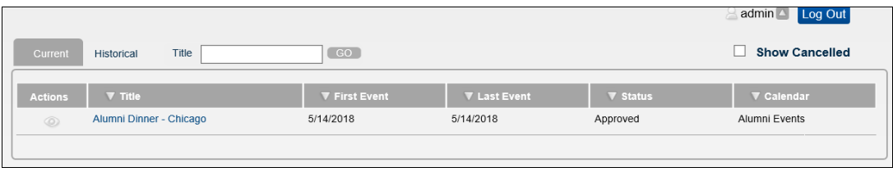

On the Master Calendar main menu, point to My Options, and then click View My Requests. The View Request page opens. By default, the Current tab is the opened tab. The Current tab shows all your event requests going forward from the current day’s date. The Historical tab shows all your past event requests.

View Request Page
|
If |
Status |
|---|---|
|
The request was approved for all calendars to which you submitted it |
Approved |
|
The request was denied for all calendars to which you submitted it |
Disapproved |
|
The request has not previously been approved for any calendar, or it was previously denied for any calendar, and it is currently pending on one or more calendars |
Pending |